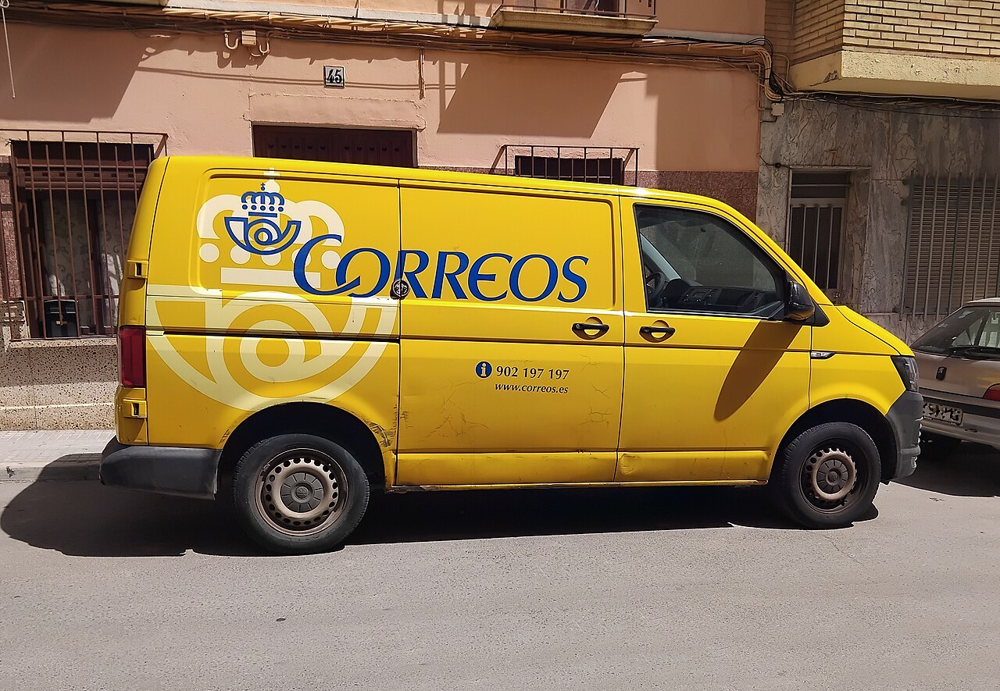

1984
Código postal
Cinco dígitos que permitieron a las máquinas clasificar sin leer la dirección.
Más de 300 años conectando personas: de los orígenes de Correos en 1716 a su próximo paso digital.
¿Cómo ha cambiado la tecnología la forma de trabajar, vender y generar valor de Correos, y qué mejora digital propondríamos para su futuro?
Correos nació en 1716 como servicio público para llevar cartas y hoy es, sobre todo, una empresa de paquetería del comercio electrónico. En 2025, por primera vez, en España se enviaron más paquetes que cartas, y Correos ha tenido que transformar su forma de clasificar, seguir y entregar envíos.
Cuatro tecnologías explican ese cambio. Proceso estudiado: cómo han evolucionado las empresas gracias a la tecnología.

Cinco dígitos que permitieron a las máquinas clasificar sin leer la dirección.
Clasificadoras que leen el código de barras y separan miles de paquetes por hora.
Cada entrega queda registrada en tiempo real y el cliente la ve al momento.
El cliente decide cuándo y dónde recibe su paquete: taquillas y app.
Informe Anual Integrado 2024 del Grupo Correos, pp. 8–9